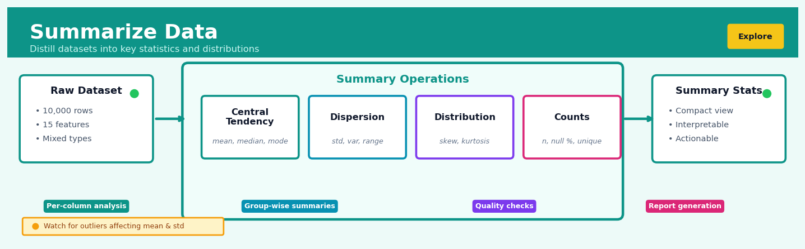
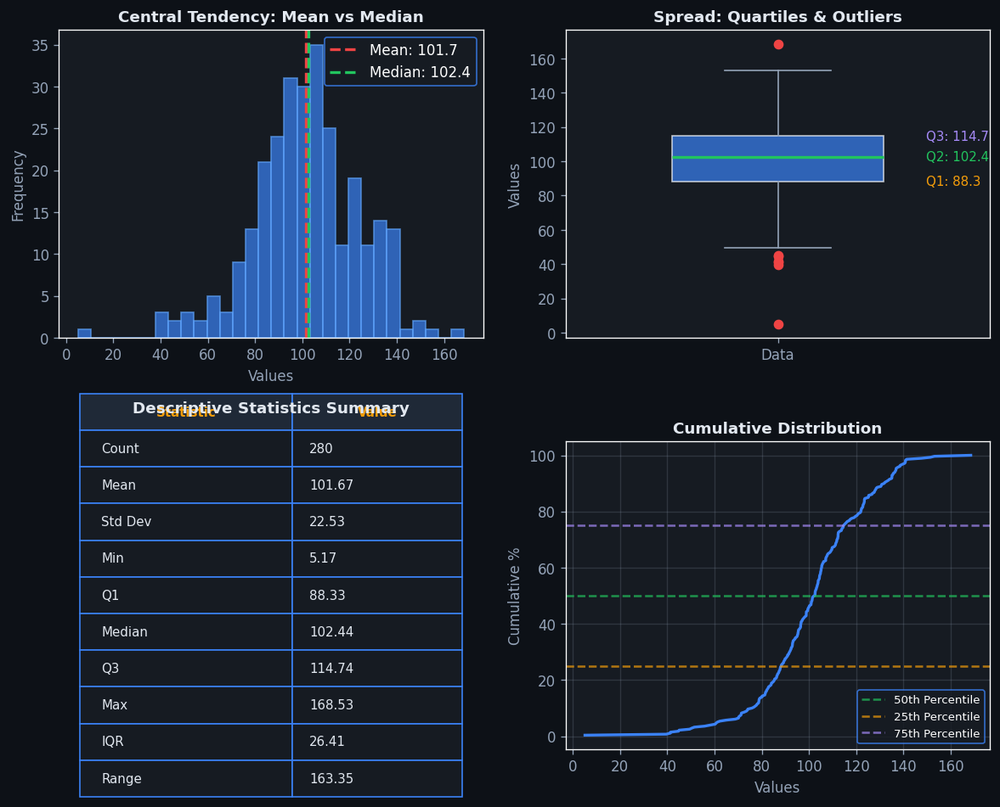
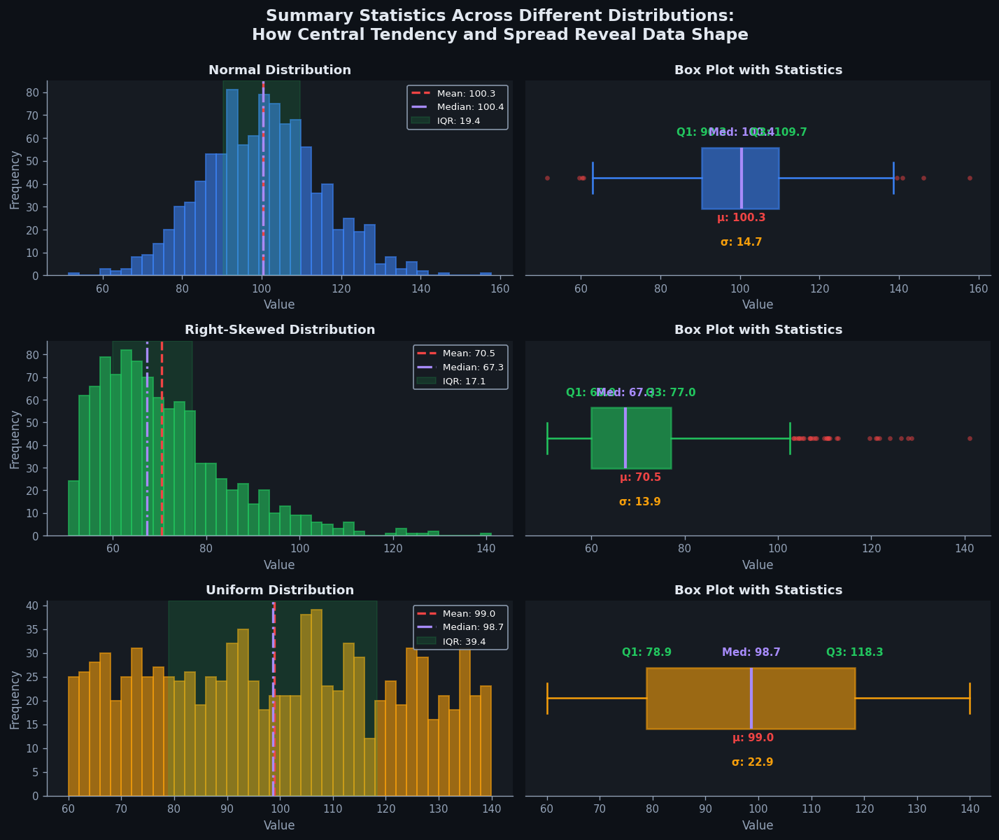

Summarize Data#


Most analysts rush to visualize their data before computing robust summary statistics, but I've learned that spending 10 minutes examining mean vs median discrepancies can immediately flag data quality issues that would otherwise lurk undetected in pretty charts. The real power of summarization isn't just describing what you have, it's catching what's wrong before you waste hours modeling garbage. Always compute summaries by meaningful subgroups, not just globally, because aggregate statistics hide the variation that often contains your most important signal.
The 60-Second Version#
What it does: Summarize Data collapses thousands of individual records into a handful of numbers that describe the whole—like turning every transaction into total sales per region.
When to use it: You’re staring at too much raw data to see the pattern, and you need to answer questions like “what’s typical?” or “how do groups compare?”
What you get back: A short table showing statistics (counts, averages, totals) for each group you care about, ready to chart or report.
Difficulty |
Easy |
Typical runtime |
Seconds on 100K rows |
What you bring |
A dataset with measurements to summarize and optional categories to group by |
What you get |
A condensed table with one row per group and columns for each statistic |
Heuristix bucket |
Explore — Shaping & Transforming Data |
Summaries hide individual cases—outliers, errors, and exceptions disappear into averages, so always inspect the raw data first when decisions carry risk.
Learning Objectives#
After reading this chapter, a business user will be able to:
Identify situations where summarizing data reveals actionable insights, such as spotting sales trends by region, comparing customer segments, or detecting operational bottlenecks in time-series data.
Interpret summary statistics—including mean, median, percentiles, and counts—to explain data distributions, central tendencies, and variability to non-technical stakeholders in clear business language.
Decide which grouping variables and summary metrics answer specific business questions, such as determining whether to segment customers by geography or purchase frequency to optimize marketing spend.
After reading this chapter, a data scientist will be able to:
Implement grouped aggregations using appropriate functions in Python (pandas), R (dplyr), and SQL, while correctly handling missing values, zero counts, and empty groups.
Select appropriate summary statistics based on data distribution characteristics and analysis goals, understanding when to favor robust measures like median over mean, or when to compute weighted averages.
Validate summarized outputs by checking for aggregation errors, identifying anomalies caused by outliers or incorrect groupings, and diagnosing mismatches between granularity levels in source and target data.
Overview#
Summarize Data is a data aggregation technique that computes statistical summaries—such as counts, sums, means, medians, and percentiles—across rows of a dataset, optionally grouped by one or more categorical variables. Its core purpose is to transform granular, row-level observations into condensed, interpretable summaries that reveal patterns, distributions, and central tendencies within the data. This technique belongs to the family of descriptive statistics and data reduction methods and serves as a foundational building block in exploratory data analysis, reporting, and feature engineering pipelines.
When to Use This#
Use this when you need to understand the central tendency and spread of numerical variables before building models—computing means, standard deviations, and quantiles provides essential distributional insight.
Use this when you want to aggregate transactional data to a higher level of granularity, such as summarising daily sales into weekly or monthly totals for time-series forecasting.
Use this when you need to compare groups within your data—for example, computing average customer lifetime value by acquisition channel or median claim amount by policy type.
Use this when preparing data for reporting or dashboarding, where stakeholders need KPIs like total revenue, average order value, or customer counts by segment.
Use this when creating aggregated features for machine learning models, such as computing the mean and standard deviation of a customer’s historical purchase amounts as input features for a churn prediction model.
Use this when detecting data quality issues—unusually high counts of missing values, unexpected minimum or maximum values, or implausible variance can signal data pipeline errors.
Use this when you need to reduce a large dataset to a manageable size for initial exploration without losing key distributional information.
Do NOT use this when you need to preserve row-level detail for downstream analysis—summarisation is a lossy transformation that discards individual observations.
Do NOT use this when the aggregation function you need is not well-defined for your data type (e.g., computing the mean of categorical variables without proper encoding).
Do NOT use this when your grouping variables have such high cardinality that the summarised output is nearly as large as the original data, negating the benefits of aggregation.
Questions This Answers#
Performance & Trend Analysis#
What were our total sales by region last quarter, and which territories are leading versus lagging?
How many customer complaints did we receive each month this year compared to last year?
What’s the average order value across our different product categories, and where should we focus our upselling efforts?
Are we seeing an upward or downward trend in our monthly customer acquisition costs over the past six months?
Which store locations have the highest foot traffic on weekends versus weekdays?
Customer & Segment Insights#
What percentage of our revenue comes from our top 10% of customers versus the bottom 50%?
How does average customer lifetime value differ between our premium and standard subscription tiers?
What’s the median time from first contact to closed deal across our enterprise versus mid-market sales segments?
Do our customers in the 25–34 age group spend more per transaction than those in the 45–54 bracket?
How many repeat purchases are we seeing from customers acquired through different marketing channels?
Operational & Resource Allocation#
What’s the typical turnaround time for our support tickets by priority level and department?
Which product SKUs account for 80% of our inventory costs, and should we reconsider our stock levels?
How does employee productivity vary across our regional offices when measured by revenue per headcount?
What are the peak hours for our call center volume, and are we staffed appropriately during those windows?
How It Works#
Imagine you’re a teacher with a stack of 120 math tests from four different classrooms. Right now, you’re drowning in individual scores—87, 92, 68, 74, and on and on. You can’t possibly report all 120 numbers to the principal or spot patterns at a glance. So you do what any sensible person would do: you organize the tests into four piles (one per classroom), then calculate the average score, highest score, lowest score, and how many students passed for each class. Suddenly, instead of 120 overwhelming numbers, you have a clean table with four rows showing exactly what you need to know. That’s summarizing data—turning a flood of details into a handful of meaningful numbers that tell the story.
BEFORE: Raw student test scores (120 rows)
┌───────────┬──────────┬───────┐
│ Student │ Classroom│ Score │
├───────────┼──────────┼───────┤
│ Alice │ Room A │ 87 │
│ Bob │ Room A │ 92 │
│ Carol │ Room B │ 68 │
│ David │ Room B │ 74 │
│ Emma │ Room A │ 95 │
│ Frank │ Room C │ 81 │
│ ... │ ... │ ... │
│ (120 rows total) │
└─────────────────────────────┘
↓
GROUP BY Classroom + CALCULATE
↓
AFTER: Summary statistics (4 rows)
┌──────────┬───────┬─────────┬────────┐
│ Classroom│ Count │ Average │ Max │
├──────────┼───────┼─────────┼────────┤
│ Room A │ 30 │ 88.2 │ 95 │
│ Room B │ 30 │ 71.5 │ 84 │
│ Room C │ 30 │ 79.0 │ 91 │
│ Room D │ 30 │ 85.3 │ 98 │
└──────────┴───────┴─────────┴────────┘
Step 1: Identify what you want to summarize. The process starts by selecting the column you care about—in our example, that’s the test scores. This is your “measurement” column, the raw numbers you want to condense into something digestible.
Step 2: Decide if you want groups (or just one overall summary). You choose whether to calculate one grand summary for everything, or break it into groups first. If you pick “Classroom” as your grouping variable, the algorithm will sort all the rows into separate buckets—all Room A students together, all Room B students together, and so on.
Step 3: Calculate statistics within each group. For each bucket, the system crunches the numbers. It counts how many scores are in the pile. It adds them all up and divides by the count to get the average. It finds the highest and lowest values. It can even sort the scores and pick the middle one (the median) or calculate what percentage fall above a certain threshold.
Step 4: Collapse each group into a single summary row. Instead of thirty individual student scores for Room A, you now have one row: “Room A had 30 students with an average of 88.2 and a top score of 95.” This happens for every group.
Step 5: Present the condensed table. The output is a brand-new, much shorter table where each row represents one group and each column shows a different summary statistic. You’ve transformed 120 scattered data points into 4 interpretable insights.
The key insight: Summarize Data works by exploiting the fact that humans think in patterns and comparisons, not individual observations—by collapsing many examples into a few representative numbers, we gain the ability to see trends, outliers, and differences that are invisible in the raw data.
The Intuition#
Imagine you are a regional manager overseeing fifty retail stores. Each store sends you daily reports containing thousands of individual transaction records—customer ID, product purchased, price, timestamp, and payment method. Reading through millions of rows to understand how your region is performing would be impossible. Instead, you ask each store manager to send you a summary: total sales, number of transactions, average basket size, and the range of transaction values. These summaries compress the raw data into digestible figures that let you compare stores, spot outliers, and make decisions without drowning in detail.
This compression is precisely what data summarisation accomplishes. The raw dataset is your pile of transaction receipts; the summary statistics are the executive report. The key insight is that well-chosen summary statistics capture the essential character of a distribution—where it is centred, how spread out it is, whether it is symmetric or skewed—while discarding the specifics of individual observations. A mean tells you the balance point; a standard deviation tells you how tightly clustered the data is around that balance point; a median tells you the value that splits the distribution in half; and quantiles tell you about the tails.
When you add grouping variables, summarisation becomes even more powerful. Instead of a single mean for all transactions, you compute separate means for each store, each product category, or each customer segment. This allows you to answer comparative questions: Which stores are underperforming? Which product categories have the highest variance in sales? Which customer segments have the largest average order values? The grouping operation partitions your data into subsets, and the aggregation operation computes statistics within each subset. Together, they transform a flat table of observations into a structured summary that reveals patterns across dimensions of interest.
The Mathematics#
Problem Setup and Notation#
Let \(\mathbf{X} = \{x_1, x_2, \ldots, x_n\}\) be a sample of \(n\) observations of a numerical variable. We assume these observations are realisations of a random variable \(X\) with unknown distribution \(F\). Our goal is to compute summary statistics that estimate properties of \(F\).
When grouping is applied, let \(G: \{1, \ldots, n\} \to \{1, \ldots, K\}\) be a grouping function that assigns each observation index to one of \(K\) groups. For group \(k\), define \(I_k = \{i : G(i) = k\}\) as the set of indices belonging to group \(k\), and let \(n_k = |I_k|\) be the group size.
Measures of Central Tendency#
Arithmetic Mean:
The sample mean is an unbiased estimator of the population mean \(\mu = \mathbb{E}[X]\). For grouped data, the group mean is:
Median:
The sample median \(\tilde{x}\) is the value such that at least half of the observations are less than or equal to \(\tilde{x}\) and at least half are greater than or equal to \(\tilde{x}\). For sorted observations \(x_{(1)} \leq x_{(2)} \leq \cdots \leq x_{(n)}\):
Mode:
The mode is the most frequently occurring value. For continuous data, this is typically computed via kernel density estimation or histogram binning.
Measures of Dispersion#
Sample Variance:
The denominator \(n-1\) (Bessel’s correction) ensures unbiasedness: \(\mathbb{E}[s^2] = \sigma^2\) where \(\sigma^2 = \text{Var}(X)\).
Sample Standard Deviation:
Note that \(s\) is a biased estimator of \(\sigma\), though the bias is small for moderate \(n\).
Range:
Interquartile Range (IQR):
where \(Q_1\) and \(Q_3\) are the 25th and 75th percentiles respectively.
Quantiles and Percentiles#
The \(p\)-th quantile \(Q(p)\) for \(p \in [0, 1]\) satisfies:
For a sample, various interpolation methods exist. The linear interpolation method computes:
where \(h = (n - 1)p + 1\).
Measures of Shape#
Skewness:
Positive skewness indicates a right tail; negative skewness indicates a left tail.
Kurtosis:
The subtraction of 3 gives excess kurtosis, where a normal distribution has excess kurtosis of zero.
Aggregation for Counts and Sums#
Count:
Sum:
Weighted Mean:
Given weights \(w_i > 0\):
Assumptions#
Numerical validity: The aggregation functions assume the variable is measured on an interval or ratio scale where arithmetic operations are meaningful.
Independence: Standard error calculations assume observations are independent and identically distributed (i.i.d.).
Finite moments: Mean and variance require finite first and second moments. Heavy-tailed distributions may have undefined or infinite variance.
Complete data: Basic formulas assume no missing values. In practice, missing values are either excluded (reducing \(n\)) or imputed.
Edge Cases#
Empty groups: If \(n_k = 0\), aggregations are undefined. Implementations typically return
NaNor raise an error.Single observation: If \(n_k = 1\), variance is undefined (division by zero with Bessel’s correction) or zero (population formula).
Constant values: If all \(x_i\) are identical, variance and standard deviation are zero, and percentiles all equal the constant value.
Relationship to Other Methods#
Summarisation is closely related to the sufficient statistic concept from statistical inference. For a normal distribution, the sample mean and variance are jointly sufficient for the population parameters. Summarisation also underpins pivot tables in business intelligence, GROUP BY operations in SQL, and the split-apply-combine paradigm in data manipulation.
Understanding the Mathematics#
The Mean (Arithmetic Average)#
The equation:
Read it aloud:
“The mean equals one divided by the count of observations, multiplied by the sum of all individual values from the first observation to the last.”
What each symbol means:
\(\bar{x}\) = the mean (pronounced “x-bar”), our summary value
\(n\) = total number of observations in the dataset
\(x_i\) = each individual data point (the subscript \(i\) labels which observation)
\(\sum_{i=1}^{n}\) = “sum up all values starting from observation 1 through observation n”
A concrete numerical example:
A coffee shop tracks daily revenue for five days: \(420, \)380, \(510, \)395, $445.
Step by step:
\(n = 5\) (five days of data)
Sum: \(420 + 380 + 510 + 395 + 445 = 2,150\)
Mean: \(\bar{x} = \frac{1}{5} \times 2,150 = \frac{2,150}{5} = 430\)
Average daily revenue is $430.
Why this equation matters:
The mean translates hundreds or thousands of individual measurements into a single representative number that guides budgeting, forecasting, and performance evaluation.
The Variance#
The equation:
Read it aloud:
“The variance equals one divided by the count minus one, multiplied by the sum of each observation’s squared distance from the mean.”
What each symbol means:
\(s^2\) = variance (spread of the data)
\(n-1\) = degrees of freedom (sample size minus one, corrects for estimation bias)
\(x_i - \bar{x}\) = deviation of each observation from the mean
\((x_i - \bar{x})^2\) = squared deviation (makes all differences positive and emphasizes outliers)
A concrete numerical example:
Using the same coffee shop data with \(\bar{x} = 430\):
Day |
Revenue |
Deviation |
Squared Deviation |
|---|---|---|---|
1 |
420 |
-10 |
100 |
2 |
380 |
-50 |
2,500 |
3 |
510 |
+80 |
6,400 |
4 |
395 |
-35 |
1,225 |
5 |
445 |
+15 |
225 |
Sum of squared deviations = \(100 + 2,500 + 6,400 + 1,225 + 225 = 10,450\)
Variance: \(s^2 = \frac{10,450}{5-1} = \frac{10,450}{4} = 2,612.5\)
Why this equation matters:
Variance quantifies unpredictability—high variance means inconsistent revenue, requiring larger cash reserves or different inventory strategies.
The Standard Deviation#
The equation:
Read it aloud:
“The standard deviation equals the square root of the variance.”
What each symbol means:
\(s\) = standard deviation (spread in original units)
\(\sqrt{\phantom{x}}\) = square root operator (reverses the squaring we did in variance)
All other symbols inherit meaning from the variance equation
A concrete numerical example:
Continuing our coffee shop example:
\(s = \sqrt{2,612.5} \approx 51.11\)
The typical daily revenue varies by about \(51 from the \)430 average.
Why this equation matters:
Standard deviation translates variance back into dollars (or whatever unit we measured), making spread immediately interpretable for business decisions.
The Median (50th Percentile)#
The equation:
Read it aloud:
“If you have an odd number of observations, the median is the middle value. If even, it’s the average of the two middle values.”
What each symbol means:
\(x_{(k)}\) = the value at position \(k\) when data is sorted from smallest to largest
The cases split logic based on whether \(n\) is odd or even
A concrete numerical example:
Coffee shop revenue sorted: \(380, \)395, \(420, \)445, $510
Since \(n=5\) (odd): Median = \(x_{(5+1)/2} = x_3 = 420\)
If we add a sixth day at \(405: \)380, \(395, \)405, \(420, \)445, $510
Now \(n=6\) (even): Median = \(\frac{x_3 + x_4}{2} = \frac{405 + 420}{2} = 412.50\)
Why this equation matters:
The median resists distortion from extreme values—one wildly successful day won’t mislead your sense of “typical” performance the way it would skew the mean.
The Big Picture#
The mathematics of summarizing data fundamentally transforms noise into signal. Each equation serves a specific purpose: the mean locates the center of mass, variance and standard deviation quantify uncertainty, and the median provides a robust alternative when outliers threaten to mislead. We use these particular formulas—rather than simpler alternatives—because they possess mathematically desirable properties: the mean minimizes squared errors, variance properly accounts for sample uncertainty through \(n-1\), and the median maintains meaning even when distributions are skewed. In essence, these equations compress hundreds of data points into a few interpretable numbers without losing the essential story the data tells.
Python Implementation#
import numpy as np
import pandas as pd
from scipy import stats
# Create realistic synthetic dataset: retail transactions
np.random.seed(42)
n = 1000
data = pd.DataFrame({
'transaction_id': range(1, n + 1),
'store_id': np.random.choice(['Store_A', 'Store_B', 'Store_C'], n),
'product_category': np.random.choice(['Electronics', 'Clothing', 'Groceries'], n),
'transaction_amount': np.abs(np.random.lognormal(mean=4, sigma=0.8, size=n)),
'items_purchased': np.random.poisson(lam=3, size=n) + 1,
'customer_age': np.random.normal(loc=42, scale=12, size=n).clip(18, 80).astype(int)
})
print("=== Sample of Raw Data ===")
print(data.head(10))
print(f"\nDataset shape: {data.shape}")
# Example 1: Global summary statistics (no grouping)
print("\n=== Global Summary Statistics ===")
numerical_cols = ['transaction_amount', 'items_purchased', 'customer_age']
global_summary = data[numerical_cols].agg([
'count', 'mean', 'std', 'min',
lambda x: x.quantile(0.25), # Q1
'median',
lambda x: x.quantile(0.75), # Q3
'max'
]).round(2)
global_summary.index = ['count', 'mean', 'std', 'min', 'Q1', 'median', 'Q3', 'max']
print(global_summary)
# Example 2: Grouped summary by store
print("\n=== Summary by Store ===")
store_summary = data.groupby('store_id')['transaction_amount'].agg([
('count', 'count'),
('sum', 'sum'),
('mean', 'mean'),
('std', 'std'),
('min', 'min'),
('median', 'median'),
('max', 'max')
]).round(2)
print(store_summary)
# Example 3: Multi-level grouping (store and product category)
print("\n=== Summary by Store and Product Category ===")
multi_group_summary = data.groupby(['store_id', 'product_category']).agg({
'transaction_amount': ['count', 'sum', 'mean', 'std'],
'items_purchased': ['mean', 'sum']
}).round(2)
print(multi_group_summary)
# Example 4: Custom aggregations including percentiles and skewness
print("\n=== Advanced Statistics by Store ===")
def iqr(x):
"""Compute interquartile range."""
return x.quantile(0.75) - x.quantile(0.25)
def skewness(x):
"""Compute sample skewness."""
return stats.skew(x, nan_policy='omit')
def coefficient_of_variation(x):
"""Compute CV = std/mean as percentage."""
return (x.std() / x.mean()) * 100 if x.mean() != 0 else np.nan
advanced_summary = data.groupby('store_id')['transaction_amount'].agg([
('n', 'count'),
('mean', 'mean'),
('median', 'median'),
('std', 'std'),
('iqr', iqr),
('skewness', skewness),
('cv_pct', coefficient_of_variation),
('p10', lambda x: x.quantile(0.10)),
('p90', lambda x: x.quantile(0.90))
]).round(2)
print(advanced_summary)
# Example 5: Handling missing values
data_with_missing = data.copy()
data_with_missing.loc[data_with_missing.sample(50).index, 'transaction_amount'] = np.nan
print("\n=== Summary with Missing Values ===")
missing_summary = data_with_missing.groupby('store_id')['transaction_amount'].agg([
('n_total', 'size'),
('n_valid', 'count'),
('n_missing', lambda x: x.isna().sum()),
('pct_missing', lambda x: (x.isna().sum() / len(x)) * 100),
('mean', 'mean') # Automatically excludes NaN
]).round(2)
print(missing_summary)
Expected Output Interpretation:
The global summary provides baseline statistics for benchmarking individual groups.
Store summaries reveal which locations have higher transaction volumes and values.
Multi-level grouping exposes interactions—e.g., whether Electronics perform differently across stores.
Advanced statistics like skewness and coefficient of variation indicate distributional shape and relative variability.
Missing value summaries quantify data quality by group.
Visualisations#


Using This in Heuristix#
Input Requirements#
Input Port |
Description |
Required Columns |
|---|---|---|
Data |
Primary dataset to summarise |
At least one numerical column for aggregation |
Grouping columns: Categorical or discrete numerical variables (string, integer, or date types)
Value columns: Numerical variables (integer or float) for aggregation
Configuration Parameters#
Parameter |
Type |
Description |
|---|---|---|
|
Multi-select |
Columns to group by; leave empty for global summary |
|
Multi-select |
Numerical columns to aggregate |
|
Multi-select |
Statistics to compute: count, sum, mean, median, std, var, min, max, range, quantile, skewness, kurtosis, mode, first, last |
|
List of floats |
Custom quantiles (0–1) when “quantile” is selected; e.g., [0.1, 0.25, 0.5, 0.75, 0.9] |
|
Dropdown |
“exclude” (skip NaN), “include” (count as group), or “error” (fail if NaN present) |
`min |
Config Recipes#
Recipe 1: Quick Exploration Summary#
When to use: Initial dataset exploration when you need fast insight into distributions across all numeric columns without caring about edge cases or missing data handling.
Settings:
Parameter |
Value |
Why |
|---|---|---|
|
|
No grouping—summarize entire dataset |
|
|
Core five-number summary plus standard deviation |
|
|
Quartiles only—skip extreme percentiles |
|
|
Ignore missing values for speed |
|
|
Exclude categorical columns automatically |
What you get: A compact statistical overview of all numeric features in seconds, sufficient for detecting ranges and obvious anomalies.
Trade-off: You miss granular distributional details and won’t catch subtle data quality issues in categorical fields or missing value patterns.
Recipe 2: Production-Grade Reporting#
When to use: Generating automated reports or dashboards where accuracy, completeness, and auditability matter more than execution speed.
Settings:
Parameter |
Value |
Why |
|---|---|---|
|
|
Business-relevant stratification |
|
|
Comprehensive set including robust median |
|
|
Full distribution with tail analysis |
|
|
Track missing counts as explicit metrics |
|
|
Add variance for statistical testing downstream |
|
|
Four decimal places for reproducible figures |
What you get: Exhaustive summaries stratified by key dimensions with documented missing data, suitable for regulatory review or client delivery.
Trade-off: Execution takes 3-5x longer and produces verbose output requiring additional filtering for presentation.
Recipe 3: Highly Skewed Transaction Data#
When to use: Summarizing financial transactions, event counts, or any data with extreme outliers where means are misleading.
Settings:
Parameter |
Value |
Why |
|---|---|---|
|
|
Per-entity summaries |
|
|
Median Absolute Deviation instead of std |
|
|
Focus on upper tail where action thresholds live |
|
|
Cap extreme values at 1st/99th percentile |
|
|
Treat missing as zero for transaction counts |
What you get: Robust central tendency metrics unaffected by whales or data entry errors, with tail behavior explicitly quantified.
Trade-off: You lose information about true extremes, which may be legitimate high-value customers or fraud cases requiring separate investigation.
Recipe 4: Pre-Aggregation for Model Features#
When to use: Creating time-window or entity-level aggregates as features for machine learning models where temporal leakage is a risk.
Settings:
Parameter |
Value |
Why |
|---|---|---|
|
|
Time-bounded entity grouping |
|
|
Include trend coefficient across window |
|
|
Ensure aggregates use only historical data |
|
|
Auto-generate ratio features (e.g., max/mean) |
|
|
Remove groups lacking variance |
What you get: Feature matrix with temporal integrity guaranteed, ready for model training without leakage concerns.
Trade-off: Requires careful date partitioning setup and produces many features needing selection or regularization.
Business Applications#
Financial Services
A mid-sized UK mortgage lender processes 15,000 loan applications monthly but struggles to identify which underwriters approve applications fastest without sacrificing quality. By summarizing approval times, decline rates, and loan performance metrics grouped by underwriter and loan type, the analytics team surfaces that three underwriters consistently process low-risk applications 40% faster than peers while maintaining identical default rates. This insight enables the bank to redistribute workload, reducing average time-to-approval from 12 days to 7 days and capturing an additional £2.3M in quarterly origination volume that would otherwise have gone to competitors.
Retail
An e-commerce retailer with 2M SKUs cannot efficiently identify which product categories drive weekend versus weekday revenue. Summarizing order value, units sold, and return rates by product category, day of week, and hour enables merchandising teams to discover that home office furniture generates 68% of its weekly revenue between Friday 6pm and Sunday 9pm, while apparel sales peak Tuesday through Thursday mornings. The retailer reallocates email send times and paid search budgets accordingly, lifting overall conversion rate from 2.1% to 2.9% and generating $4.7M in incremental annual revenue.
Healthcare
A regional hospital network with 12 facilities faces unexplained variance in 30-day readmission rates across locations. Clinical operations summarizes readmission counts and percentages by facility, primary diagnosis, discharge day-of-week, and patient demographics, revealing that Friday discharges for congestive heart failure patients show 27% higher readmission rates than Monday–Wednesday discharges. The network implements enhanced Friday discharge protocols including weekend follow-up calls, reducing overall readmissions by 18% and avoiding approximately $1.8M in annual Medicare penalties.
Insurance
A national auto insurer receives 45,000 claims monthly but cannot predict staffing needs for its adjuster pool. By summarizing claim counts, average cycle time, and settlement amounts by claim type, region, and adjuster experience level, workforce planning identifies that new adjusters require 9.2 days to close minor collision claims versus 4.1 days for veterans. The insurer adjusts training programs and implements a tiered assignment system, cutting overall claims processing time from 11 days to 6.5 days and improving customer satisfaction scores by 22 points.
Manufacturing
A pharmaceutical contract manufacturer running 24/7 production cannot identify root causes of batch rejection. Summarizing pass/fail rates, deviation counts, and quality metrics by production line, shift, operator, and raw material lot reveals that night shift (11pm–7am) generates 3.2× higher rejection rates despite identical SOPs and equipment. Investigation uncovers inadequate environmental controls during overnight temperature fluctuations; after remediation, overall yield improves from 94.1% to 98.7%, recovering $3.1M annually in previously wasted raw materials.
Logistics
A national parcel carrier processing 800,000 packages daily struggles with inconsistent on-time delivery across 150 depots. Summarizing delivery performance by depot, route density, vehicle type, and weather conditions identifies that 11 underperforming depots share a common trait: average delivery stops per route below 85, compared to 110+ for top performers. Route optimization based on these density insights lifts on-time delivery from 91.3% to 96.8%, reducing customer complaint volume by half.
Marketing
A B2B SaaS company runs email campaigns to 340,000 contacts but sees declining engagement. Summarizing open rates, click-through rates, and conversion rates by industry vertical, company size, sender name, and time-of-day reveals a surprise: emails from the CEO to financial services contacts sent Thursday 6–8am show 4.2× higher meeting-booking rates than standard marketing sends. Restructuring campaigns around these insights lifts overall qualified pipeline contribution from \(1.9M to \)3.8M per quarter.
Telecommunications
A mobile network operator with 8M subscribers cannot efficiently identify churn risk segments. Summarizing monthly churn rates by plan type, tenure, customer service contact frequency, and data usage patterns reveals that customers who contact support 3+ times in 30 days churn at 12× the baseline rate. The carrier implements proactive retention outreach to this segment, cutting monthly churn from 2.3% to 1.7% and retaining $14M in annual recurring revenue.
Energy
A wind farm operator managing 240 turbines across six sites struggles to optimize maintenance schedules. Summarizing downtime hours, energy output, and maintenance costs by turbine age, model, and technician team uncovers that turbines serviced by the most experienced crew generate 7% more uptime annually. Reallocating technician assignments recovers 1,800 MWh monthly in previously lost generation capacity.
Public Sector
A metropolitan fire department responds to 125,000 calls annually but cannot determine optimal station locations for future growth. Summarizing response times by neighborhood, time-of-day, and incident type identifies four underserved zones where median response exceeds the 6-minute target by 80+ seconds. Data-driven station placement planning ensures 94% of residents receive sub-6-minute coverage, potentially saving 15–20 additional lives annually based on cardiac arrest survival models.
Worked Example#
Sarah Chen, a senior data analyst at Meridian Insurance, was three minutes into her Monday morning coffee when her Slack lit up. The VP of Customer Success wanted to know why churn had spiked 4% last quarter—and more importantly, which customer segments were leaving. The executive team meeting was in two days, and they needed answers that could guide retention budget allocation across regions and policy types.
Sarah knew the raw claims database held the story, but with 847,000 individual policy records spanning five years, nobody could see the forest for the trees. She needed to collapse this ocean of transactions into something a room of executives could actually use to make decisions.
She pulled the last 18 months of policy data into a working table. The dataset was messier than she’d hoped—some regions used different date formats, a few records had missing values in the claim_amount field, and the sales team’s notes were… creative. Here’s what a sample looked like:
policy_id |
region |
policy_type |
claim_amount |
customer_age |
status |
|---|---|---|---|---|---|
P10234 |
Northeast |
Auto |
2400 |
34 |
Active |
P10299 |
Southwest |
Home |
52 |
Churned |
|
P10301 |
Northeast |
Auto |
5600 |
29 |
Active |
P10334 |
Midwest |
Life |
0 |
45 |
Active |
P10392 |
Southwest |
Auto |
3200 |
38 |
Churned |
Sarah opened her workflow tool and dragged in a Summarize Data node. She needed to understand churn patterns by region and policy type—the two dimensions her VP cared most about. She configured the grouping variables first: region and policy_type. Then came the tricky part: choosing the right summary statistics.
She added a count of policies (to understand segment size), the churn rate (percentage where status == 'Churned'), the mean customer age (wondering if younger customers were leaving), and the median claim amount (to see if high-claims customers churned differently). She deliberately chose median over mean for claims because she knew a few catastrophic claims could skew the average wildly—median would give her the typical customer experience.
import pandas as pd
# Sarah's actual analysis script
df = pd.read_csv('policy_data.csv')
# Clean up missing claims - treat nulls as zero
df['claim_amount'] = df['claim_amount'].fillna(0)
# Calculate summary statistics by region and policy type
summary = df.groupby(['region', 'policy_type']).agg(
policy_count=('policy_id', 'count'),
churn_count=('status', lambda x: (x == 'Churned').sum()),
avg_age=('customer_age', 'mean'),
median_claim=('claim_amount', 'median'),
total_claims=('claim_amount', 'sum')
).reset_index()
# Calculate churn rate as percentage
summary['churn_rate'] = (
summary['churn_count'] / summary['policy_count'] * 100
).round(1)
# Sort by churn rate descending to spot trouble areas
summary = summary.sort_values('churn_rate', ascending=False)
print(summary[['region', 'policy_type', 'policy_count',
'churn_rate', 'avg_age', 'median_claim']])
When the results rendered, one pattern jumped out immediately:
region |
policy_type |
policy_count |
churn_rate |
avg_age |
median_claim |
|---|---|---|---|---|---|
Southwest |
Auto |
94,200 |
18.3% |
31.2 |
$4,100 |
Northeast |
Auto |
112,000 |
7.2% |
34.8 |
$2,800 |
Southwest |
Home |
41,300 |
15.1% |
33.5 |
$0 |
Midwest |
Auto |
89,500 |
6.8% |
38.4 |
$2,950 |
The Southwest region’s auto policies were churning at more than double the rate of other regions—and these customers were younger, with significantly higher median claims. Sarah’s pulse quickened. This wasn’t just a retention problem; it was a pricing problem. The Southwest team had been aggressively pursuing younger drivers in competitive markets, but those high-claims customers were leaving once premiums adjusted after their first incident.
She added one more cut to the analysis: segmenting by customer tenure. The pattern sharpened further—82% of Southwest auto churn happened within 18 months of policy origination, right after the first renewal following a claim.
At Wednesday’s executive meeting, Sarah showed three slides. The VP of Customer Success immediately redirected $340,000 in retention spending from broad email campaigns to a targeted first-renewal intervention program in the Southwest, focusing on auto policies with claims. The pricing team got a directive to review Southwest auto underwriting models within 30 days.
Six months later, Southwest auto churn had dropped 11 percentage points.
Looking back, Sarah wished she’d included policy premium amounts in her initial summary—that would have let her calculate customer lifetime value by segment on the spot, rather than in a follow-up analysis the finance team requested two days later. And she would’ve been more careful about how she handled those missing claim amounts; assuming zero wasn’t perfect, but time pressure forced pragmatism over purity.
Interpreting Your Results#
You’ve just summarized your data and you’re staring at a table of numbers. Here’s exactly what you’re looking at and what to do with it.
Count Statistics#
Plain-English meaning: The count tells you how many non-null observations exist in each group. If you grouped sales by region, a count of 342 for “Northeast” means you have 342 recorded transactions from that region.
Concrete benchmarks:
Below 30 observations: Statistically unstable. Any percentages or averages will swing wildly with small changes. Don’t trust patterns here.
30–100 observations: Marginally useful. Fine for broad trends, but be cautious about detailed conclusions.
Above 100 observations: Generally stable enough to trust for decision-making.
Red flags: Dramatically unequal counts across groups (e.g., 5,000 in Group A, 12 in Group B) mean your summary statistics aren’t comparable. A group with 12 observations shouldn’t get equal weight in your analysis as one with 5,000. Also watch for counts that don’t match expected business volumes—342 Northeast transactions when you know you have 400 stores there suggests missing data.
Mean and Median#
Plain-English meaning: The mean is the arithmetic average; the median is the middle value. When a customer’s average order value is \(47 (mean) but the median is \)23, half your orders are below $23, but some big purchases are pulling the average up.
The gap between mean and median is your most important signal:
Gap < 10% of mean: Symmetrical distribution. Use mean confidently.
Gap 10–50% of mean: Moderate skew. Median is safer for typical case descriptions.
Gap > 50% of mean: Severe skew. Mean is misleading. Quote the median and investigate outliers.
Red flags: A mean of \(500 with a median of \)12 screams “outliers dominate this data.” Don’t report the mean to stakeholders—they’ll make wrong decisions. A negative mean when values should be positive (like ages, prices, counts) indicates data quality issues or misapplied filters.
Standard Deviation and Range#
Plain-English meaning: Standard deviation measures spread. For customer ages with mean 42 and standard deviation 3, most customers cluster tightly around 42. With standard deviation 18, you’re serving everyone from college students to retirees.
Concrete benchmarks (standard deviation as % of mean):
<15%: Low variability. Groups are homogeneous.
15–50%: Moderate variability. Normal for most business metrics.
>50%: High variability. Consider segmenting further or question if you’re mixing fundamentally different populations.
Red flags: Standard deviation exceeding the mean itself suggests extreme outliers or mixed populations. Range spanning impossible values (ages from -5 to 347) indicates data corruption.
Percentiles (25th, 75th, 90th, 95th)#
Plain-English meaning: The 75th percentile shows the value below which 75% of observations fall. If the 75th percentile of response time is 2.3 seconds, three-quarters of your users wait 2.3 seconds or less.
Reading them together: Compare the 25th to 75th percentile (the “interquartile range”). If 25th percentile = 100 and 75th = 150, the middle 50% of your data spans just 50 units—tight clustering. If 25th = 100 and 75th = 900, you have dramatic variability.
Look at the 95th percentile for tail behavior. If median page load is 1.2s but 95th percentile is 15s, 5% of users are having a terrible experience even though “average” looks fine.
Red flags: When the 90th percentile is more than 5× the median, you have a long-tail problem. When percentiles are identical across several groups (e.g., every region shows 75th percentile = exactly 100), you likely have a data ceiling or artificial cap.
Sanity Check Checklist#
Do counts sum correctly? If you grouped by region and show 4 regions, do the counts add up to your total dataset row count?
Are means between min and max? A mean outside the range is mathematically impossible and indicates calculation errors.
Is median between 25th and 75th percentile? If not, something broke in the computation.
Do zero counts appear where you expect data? Missing groups often hide silently as zero-count rows.
Do magnitudes make business sense? Average customer age of 487 or average purchase of $0.03 should trigger immediate investigation.
Good Enough to Act On?#
You can confidently make decisions when: (1) every group you’re comparing has at least 100 observations, (2) means and medians align within 20% for key metrics, and (3) no red flags appear in the sanity checklist. If any group has fewer than 30 observations or mean/median diverge by more than 50%, collect more data or segment differently before acting.
Decision Guidance#
What This Result Is Telling You#
When you summarize data, you are converting a flood of individual transactions, events, or observations into a manageable set of facts about your business. For example, instead of looking at 50,000 individual customer purchases, you see that your average customer spends \(127 per transaction, with half spending less than \)85 and the top 10% spending over $300. These summaries answer fundamental questions: What is typical? What is rare? Where is the center of mass in our operations, and how much variation exists around it?
These condensed metrics become the foundation for resource allocation, target setting, and performance monitoring. If your summary shows that 80% of support tickets come from 20% of product features, that tells you where to invest engineering time. If median delivery time is stable at 3 days but the 90th percentile is 12 days, you have a consistency problem affecting your most frustrated customers. If regional sales averages differ by 40%, you likely have execution gaps or market opportunities that deserve investigation.
The critical insight is that summaries reveal both the expected baseline and the exceptions that matter. They transform “we think customers usually…” into “customers actually…” and replace gut feelings with measurable benchmarks that teams can be held accountable to deliver or improve.
Decision Points#
If you see this… |
It means… |
Recommended action |
Who acts on this |
|---|---|---|---|
Mean is >20% higher than median |
Distribution is right-skewed with high-value outliers driving the average up |
Segment your analysis by customer tier or product line; top accounts may need different strategies |
Sales VP, Product Manager |
Standard deviation exceeds 50% of the mean |
Extreme variability exists; the “average” customer/transaction doesn’t represent most cases |
Create percentile-based segments (e.g., bottom 50%, middle 40%, top 10%) and manage each differently |
Operations Director, Marketing Lead |
90th percentile is >3× the median |
A significant minority experiences a drastically different outcome |
Investigate root causes for extreme cases; consider separate workflows or interventions |
Customer Success Manager, Process Owner |
Count drops >30% for a specific group |
You have a missing data problem, a declining segment, or a broken tracking pipeline |
Validate data completeness before making strategic decisions; audit data collection |
Data Engineering, Analytics Lead |
Grouped summaries show <10% variance across categories |
The grouping variable may not be meaningful; differences are noise, not signal |
Stop segmenting by this dimension; look for more impactful drivers of variation |
Strategy Lead, Analyst |
When to Proceed vs. Investigate Further#
Proceed with confidence if: sample size per group exceeds 100 observations, coefficient of variation (standard deviation ÷ mean) is below 0.5, and summaries remain stable when recalculated on different time windows or subsamples.
Proceed with caution if: you have 30–100 observations per group, outliers are present but documented, or you’re comparing groups with unequal sample sizes (largest group >5× smallest group).
Investigate before acting if: any group has fewer than 30 observations, missing data exceeds 10% in any segment, summaries change substantially when outliers are removed, or you’re comparing groups across different time periods without adjusting for seasonality.
Do not use these results yet if: data definitions are inconsistent across groups, you lack documentation on how the raw data was collected, any summary metric is based on fewer than 20 observations, or you cannot explain observed patterns using business logic.
The Cost of Getting This Wrong#
A retail chain once set inventory targets based on average store sales, ignoring the fact that their mean was inflated by three flagship locations. The result: 60% of stores were chronically overstocked, tying up $4.2M in working capital while smaller stores ran out of popular items. Marketing doubled down on channels with the “highest average customer value” without realizing the median was half that figure—they burned through budget chasing outliers while ignoring their core customer base. A software company used aggregated user metrics to declare their onboarding “successful” (average time-to-value: 8 days) while missing that 35% of users never completed setup at all—they weren’t in the average because they churned before generating data. These errors share a common thread: decisions made on summaries without understanding the distribution underneath waste resources on the wrong targets, miss the customers or operations that actually drive the business, and create misaligned incentives that reward teams for optimizing metrics that don’t reflect reality.
Common Pitfalls#
The Simpson’s Paradox Trap#
The Story: A retail analyst was evaluating two marketing campaigns by computing average conversion rates across all customers. Campaign A showed a 3.2% conversion rate versus Campaign B’s 2.8%, so they recommended scaling Campaign A. When a colleague broke down the same data by customer segment (new vs. returning), they discovered Campaign B actually outperformed in both segments—but Campaign A had been disproportionately shown to higher-converting returning customers, inflating its overall average.
Why it happens: Aggregating across heterogeneous groups masks compositional differences. The analyst trusted the overall summary without checking whether the groups being averaged were comparable in size and characteristics.
How to detect it: When group-level summaries contradict segment-level summaries, or when one categorical variable’s distribution is heavily imbalanced across another. Run a cross-tabulation of group sizes before computing means—if counts vary by 10x or more across segments, suspect this trap.
The fix: Always stratify summaries by potential confounding variables first, then examine overall aggregates only after confirming the pattern holds within strata.
The Phantom Mode Mirage#
The Story: A junior data scientist summarized customer order sizes using mean, median, and mode. The mode came back as \(47.32—an oddly precise value for the "most common" order. They reported this in a dashboard, and business users started treating \)47.32 as a natural price point. Three months later, someone noticed the mode was meaningless: every order value was unique, and the statistical package had simply returned the first value alphabetically.
Why it happens: Blindly applying all summary statistics without understanding data cardinality. Mode is only meaningful for discrete or grouped data, not continuous measurements with high uniqueness.
How to detect it: Check the frequency count of your mode value. If it appears only once or twice in a dataset of thousands, the mode is spurious. Calculate value_counts().head() and verify the top value appears meaningfully more often than others.
The fix: For continuous variables, bin the data first or skip mode entirely in favor of histograms and percentiles.
The Weighted Mean Amnesia#
The Story: An operations analyst compared average delivery times across three warehouses: 2.1 days, 2.4 days, and 2.8 days. They computed an overall average of 2.43 days by taking (2.1 + 2.4 + 2.8) / 3. When leadership questioned why this didn’t match the finance department’s figure of 2.15 days, they discovered the first warehouse handled 80% of orders while the other two split the remaining 20%.
Why it happens: Treating all groups as equally sized when computing grand averages. The analyst knew about weighted means in theory but reached for the simple arithmetic mean out of habit.
How to detect it: When your summary doesn’t reconcile with totals from other systems, or when group sizes differ substantially. Always check count() alongside mean()—if standard deviations of group sizes exceed 50% of their mean, weights matter critically.
The fix: Use weighted.mean() or compute the grand mean as sum(value * count) / sum(count) when aggregating across pre-aggregated groups.
The Outlier Contamination Cascade#
The Story: A marketing analyst summarized campaign spend per channel using mean values to allocate next quarter’s budget. The social media channel showed a mean of \(12,400 per campaign. This figure was later traced to a single \)890,000 experimental campaign that had been approved as a one-time brand exercise—but it dragged the mean up 40x while the median sat at $3,200.
Why it happens: Defaulting to means without checking distribution shape. Experienced practitioners know this but skip exploratory plots under deadline pressure.
How to detect it: When mean and median differ by more than 30%, suspect skewness or outliers. Calculate (mean - median) / median as a quick skewness indicator, and examine the 95th to 99th percentiles.
The fix: Report median alongside mean for all monetary and time-duration variables, and flag outliers explicitly rather than letting them silently inflate summaries.
The Groupby Cardinality Explosion#
The Story: A business user grouped sales data by customer_id, product_id, date, and sales_region to find “typical” order patterns. The resulting summary table had 847,000 rows from a 900,000-row source dataset—barely any aggregation occurred. They couldn’t spot patterns because almost every combination appeared once.
Why it happens: Over-grouping transforms summarization into reshaping. Non-technical users often add every available dimension thinking “more detail is better.”
How to detect it: When the output row count exceeds 30% of the input row count, you haven’t meaningfully summarized. Check output_rows / input_rows as a compression ratio.
The fix: Limit grouping to 1–3 categorical variables with cardinality under 50 each, or bin continuous variables before grouping.
The Timezone Blindness Bug#
The Story: An analyst summarized daily transaction counts by truncating timestamps to date. Counts looked erratic, with inexplicable spikes on random days. After a week of investigation, they realized the source data mixed UTC and local timestamps—midnight cutoffs were slicing transactions from different actual days.
Why it happens: Timestamps look like clean data until you group by date boundaries. The temporal grouping exposes hidden timezone inconsistencies.
How to detect it: Unexpected patterns at day boundaries, or summary counts that don’t reconcile with known business cycles. Check timestamp.dt.tz and verify all values share the same timezone or are timezone-naive.
The fix: Standardize all timestamps to UTC before any temporal grouping operation.
The Percentage Point Confusion#
The Story: A product manager saw a summary showing conversion rates improved from 2.5% to 3.5% and announced a “40% increase in conversions.” Engineering was confused—their logs showed a 1 percentage point increase. The disconnect created a credibility crisis.
Why it happens: Conflating absolute changes (percentage points) with relative changes (percent of percent). Business users naturally think in relative terms without statistical training.
How to detect it: When stakeholders express surprise at “small” improvements you consider large, or vice versa. This signals a percentage vs. percentage-point miscommunication.
The fix: Always specify both: “Conversion increased by 1 percentage point (from 2.5% to 3.5%), representing a 40% relative improvement.”
Common Misconceptions#
“Summarizing data reduces bias by smoothing out anomalies”
Why people believe this: When stakeholders see volatile raw data with extreme values, summaries like means and medians appear more “stable” and “representative.” The smoothing effect feels like it’s revealing the true signal by filtering out noise. Business leaders especially appreciate the clean simplicity of a single number they can act on.
The truth: Summarization doesn’t reduce bias—it transforms and often masks it. When you compute a mean salary across departments, you’re not eliminating the bias of gender pay gaps; you’re hiding it beneath a comfortable aggregate. Outliers aren’t always noise to be smoothed—they’re often the most important signal. A single fraudulent transaction of \(50,000 among thousands of \)20 purchases isn’t an anomaly to average away; it’s precisely what you need to detect. Summarization trades granularity for interpretability, but that trade always loses information. The question isn’t whether summaries are biased, but whether the bias they introduce aligns with your analytical purpose.
The real-world consequence: A retail analytics team summarizes customer purchase frequency by taking monthly averages, smoothing out what they consider “noise.” They miss that 15% of customers make concentrated purchases only during holiday periods. The recommendation engine, trained on these averages, fails catastrophically for this segment, sending irrelevant promotions in July and missing the November window entirely. Revenue opportunity lost: $2.3M annually.
“If the median looks reasonable, the data is probably fine”
Why people believe this: The median is robust to outliers by mathematical definition, so a sensible median value suggests the center of your distribution is well-behaved. This reasoning extends from statistics textbooks that emphasize the median’s resistance to extreme values, creating false confidence that one robust summary validates the entire dataset.
The truth: A reasonable median tells you almost nothing about data quality. You can have a perfectly normal median while 40% of your values are NULL, duplicated, or systematically miscoded. A dataset of customer ages with median 34 could simultaneously contain 10,000 records where age = 999 (a missing value code) and another 5,000 with age = 0 (a default value). The median sits happily at 34 because it only describes the middle value’s position, not the distribution’s shape, gaps, or pathologies. Data quality requires examining completeness, validity ranges, duplicate patterns, and temporal consistency—none of which a median reveals.
The real-world consequence: A healthcare analytics team validates patient outcome data by checking that median recovery time is 8 days—matching clinical expectations. They proceed to model building without examining the distribution. Later, auditors discover that 23% of records have recovery time = 0 (patients who left against medical advice) and 18% have recovery time > 180 days (coding errors from date field mismatches). The predictive model, already deployed to guide resource allocation across 40 hospitals, systematically underestimates recovery needs for complex cases. Six months of decisions need reversal.
“Group-by summaries are just aggregated versions of the same data”
Why people believe this: When you group sales by region and sum revenue, you’re literally adding up the same underlying transactions—just organized differently. The totals must contain the same information, just reorganized into a more useful structure. This feels mathematically sound: you’re applying associative operations to identical inputs.
The truth: Grouped summaries create fundamentally different analytical objects that answer different questions and enable different insights. Raw transaction data tells you what happened; grouped summaries tell you how things compare. These aren’t equivalent representations—they’re different levels of abstraction with distinct epistemological properties. When you group by region, you can suddenly detect geographic patterns, but you’ve permanently destroyed the ability to analyze time-of-day effects unless time was also a grouping variable. Every grouping choice is a commitment to one analytical perspective while closing off others. You cannot recover individual-level correlations from group-level summaries (the ecological fallacy), and you cannot detect within-group heterogeneity once you’ve aggregated.
The real-world consequence: A product team summarizes user engagement by calculating average session duration per user, then per cohort. When they notice declining engagement in recent cohorts, they launch retention initiatives. Only later do they discover that within each “declining” cohort, there’s a growing bimodal distribution: power users are more engaged than ever, while casual users churn faster. The one-size-fits-all retention campaign wastes budget on power users who didn’t need it and uses messaging that further alienates casual users. The summary hid the very segmentation that should have driven strategy.
“Summary statistics describe what’s typical in your data”
Why people believe this: Terms like “central tendency” and “average” explicitly promise to capture what’s typical or representative. When someone asks “what’s a typical customer worth?” computing the mean customer lifetime value feels like answering that question directly. The language of statistics itself reinforces this: we call these “descriptive” statistics that “characterize” the data.
The truth: Summary statistics describe mathematical properties of distributions, not the lived reality of typical cases. In a heavily right-skewed income distribution where mean household income is \(85,000, the *typical* household—the one you'd randomly encounter—earns far less, perhaps \)52,000 (the median). But even the median doesn’t describe a typical household if your distribution is U-shaped or multimodal. In many real-world datasets, no individual case actually resembles the summary statistic. The average American household has 2.5 children and 1.4 cars—a configuration that literally cannot exist. Summaries are compression functions optimized for mathematical convenience, not phenomenological accuracy.
The real-world consequence: A fintech startup designs a loan product using mean credit score (690) and mean requested amount (\(12,000) as their "typical customer" profile. They optimize rates and approval workflows for this phantom average customer. In reality, their customer base is bimodal: recent graduates with 640 scores requesting \)5,000, and established professionals with 760 scores requesting $25,000. The product satisfies neither segment—rates too high for low-risk borrowers, approval criteria too strict for high-risk ones. Customer acquisition cost remains sky-high while competitors with segment-specific products capture both markets.
“More granular groupings give you more detailed insights”
Why people believe this: Granularity equals detail, and detail equals insight. If grouping by quarter is good, grouping by month is better, and grouping by day is even more precise. This follows logically from the principle that information loss is bad—more granular groups preserve more of the original data structure, so they must support better analysis.
The truth: Beyond a certain threshold, increased granularity produces noise, not insight. Each group-level summary is an estimate of some underlying pattern, and that estimate’s reliability depends on sample size within the group. When you slice data too thinly, each group contains too few observations to produce stable estimates. Daily summaries with 3-15 observations per day will show wild variance that reflects sampling error, not meaningful daily patterns. You’re seeing the noise of small samples, not the signal of temporal trends. The optimal granularity balances information preservation against estimation stability—a trade-off that depends on your sample size, variance structure, and analytical purpose. Sometimes weekly summaries reveal patterns that daily summaries obscure.
The real-world consequence: A marketing analyst segments email campaign performance by day-of-week, hour-of-day, and customer cohort simultaneously, creating 168 groups per cohort. With only 40,000 emails sent monthly across 8 cohorts, most cells contain 20-60 observations. They confidently report that “Tuesday at 2pm performs 34% better for Q2 2023 cohort” and shift send times accordingly. Performance drops. The original finding was noise—random variance from a small sample misinterpreted as signal. They’ve now optimized toward statistical noise, systematically degrading what was previously a data-informed (if less granular) strategy. Rebuilding stakeholder trust in analytics takes nine months.
How This Connects#
Before This Node#
Filter Rows removes records that don’t meet inclusion criteria (e.g., completed transactions only, active customers, valid date ranges), ensuring that Summarize Data computes statistics on the correct population rather than polluted or irrelevant subsets. Bad upstream data: including test accounts, canceled orders, or out-of-scope time periods inflates or distorts your aggregated metrics, making summary statistics misleading.
Handle Missing Values imputes, drops, or flags incomplete records so that Summarize Data can calculate accurate counts, means, and sums without silent exclusions that bias results. Bad upstream data: columns with 40% nulls yield deceptive averages (computed only on present values) and incorrect counts, masking data quality issues in your summaries.
Parse & Format Data converts strings to dates, numbers, and categorical types so that Summarize Data can perform numeric aggregations (sum, mean) and temporal grouping (by month, quarter) instead of treating everything as text. Bad upstream data: date columns stored as strings prevent time-based grouping; numeric values with currency symbols stored as text make sum and mean operations impossible.
Join Tables brings together related datasets (e.g., linking transactions to customer demographics) so that Summarize Data can group and aggregate across meaningful dimensions like customer segment, product category, or region. Bad upstream data: unresolved foreign keys or duplicate join matches create inflated row counts, causing sums to double-count and averages to misrepresent true values.
Create Features derives calculated columns (e.g., order_total = quantity × price, tenure_days = today – signup_date) that Summarize Data then aggregates into business-relevant metrics like average order value or mean customer tenure. Bad upstream data: skipping feature creation forces you to compute metrics manually after summarization, duplicating logic and risking inconsistencies.
Remove Outliers identifies and handles extreme values before aggregation so that Summarize Data produces robust means and sums that reflect typical behavior rather than being skewed by anomalies. Bad upstream data: a single $10M typo in a revenue column pulls the mean upward by orders of magnitude, making summary statistics useless for decision-making.
After This Node#
Visualize Distribution takes summary statistics (quartiles, means, counts by category) and renders them as bar charts, box plots, or histograms, making patterns immediately interpretable for stakeholders. Summarize Data condenses thousands of rows into plottable aggregates, enabling clean, fast visualizations without overplotting.
Compare Groups uses aggregated metrics (mean conversion rate by region, median spend by segment) to perform statistical tests or simple comparisons that reveal which groups differ meaningfully. Summarize Data provides the group-level statistics required for A/B test evaluation, cohort analysis, and segment performance reviews.
Build Report consumes summary tables (total sales by month, customer count by tier) to populate dashboards, slide decks, or automated emails with key performance indicators. Summarize Data outputs exactly the pre-aggregated KPIs that reports need, avoiding the need to ship raw data.
Create Features (again, downstream) takes aggregated statistics (e.g., customer’s average purchase amount, user’s median session length) and merges them back onto the row-level dataset as new predictive features for modeling. Summarize Data computes these entity-level statistics efficiently in bulk, ready for feature engineering joins.
Train Model ingests aggregated datasets where each row represents a summarized entity (customer, store, week) rather than individual transactions, enabling modeling at the right grain for problems like customer churn or demand forecasting. Summarize Data transforms transaction logs into entity-level feature matrices that models require.
Common Pipeline Patterns#
Customer Lifetime Value Pipeline
Filter Rows → Parse & Format Data → Summarize Data → Create Features → Train Model
Aggregates purchase history per customer (total spend, order frequency, recency) to predict future revenue and segment high-value customers for retention campaigns.
Monthly Sales Dashboard
Join Tables → Handle Missing Values → Summarize Data → Visualize Distribution → Build Report
Computes revenue, unit sales, and average order value by product category and month, feeding automated executive dashboards that track business performance.
A/B Test Evaluation Workflow
Filter Rows → Remove Outliers → Summarize Data → Compare Groups → Visualize Distribution
Calculates conversion rates and average order values by experiment variant, enabling statistical comparison to determine whether the new feature improves key metrics.
What to Have Ready#
Defined aggregation grain: Decide exactly what each output row represents (one customer? one month? one product-region pair?) before running Summarize Data—ambiguity here produces unusable summaries that don’t answer your business question.
Clean grouping columns: Ensure categorical variables used for grouping (customer_id, product_category, region) contain no nulls, typos, or inconsistent labels; a single misspelling fragments your groups and undercounts aggregates.
Validated numeric columns: Confirm that fields you’ll sum or average (revenue, quantity, duration) are truly numeric, free of currency symbols or text codes, and represent the units you intend (dollars vs. cents, seconds vs. minutes).
Business logic for handling edge cases: Decide upfront how to treat zeros, nulls, and boundary conditions (do canceled orders count? do free trials? do partial months?) so Summarize Data applies consistent rules across all aggregations.
Try It Yourself#
Recommended Dataset#
Dataset: penguins from seaborn.load_dataset('penguins')
Source: Built into seaborn, loads directly without downloads
Why it’s ideal: The Palmer Penguins dataset contains measurements of 344 penguins across 3 species, 3 islands, and 2 sexes. It has a perfect mix of categorical grouping variables (species, island, sex) and continuous measurements (bill length, flipper length, body mass) that make it excellent for demonstrating how summaries change across groups. The dataset has some missing values, which reflects real-world scenarios.
Business question: “What are the physical characteristics that distinguish penguin species, and how do body measurements vary by species and sex?” This mimics wildlife research or species classification problems.
Size: ~344 rows × 7 columns
Starter Code#
import pandas as pd
import seaborn as sns
import numpy as np
# Load the penguins dataset
penguins = sns.load_dataset('penguins')
print("Dataset shape:", penguins.shape)
print("\n" + "="*60)
# OUTPUT 1: Overall summary statistics for all numeric columns
print("OVERALL SUMMARY - All Penguins")
print(penguins.describe().round(2))
print("\n" + "="*60)
# OUTPUT 2: Count by species (basic grouping)
print("SPECIES DISTRIBUTION")
print(penguins['species'].value_counts())
print("\n" + "="*60)
# OUTPUT 3: Mean body mass by species (single numeric, single grouping)
print("AVERAGE BODY MASS BY SPECIES (grams)")
species_mass = penguins.groupby('species')['body_mass_g'].agg([
('count', 'count'), # Number of observations per species
('mean', 'mean'), # Average body mass
('std', 'std'), # Standard deviation shows variability
('min', 'min'), # Range of values
('max', 'max')
]).round(2)
print(species_mass)
print("\n" + "="*60)
# OUTPUT 4: Multiple measurements by species (multiple columns)
print("PHYSICAL CHARACTERISTICS BY SPECIES")
species_summary = penguins.groupby('species').agg({
'bill_length_mm': 'mean', # Summarize bill dimensions
'bill_depth_mm': 'mean',
'flipper_length_mm': 'mean',
'body_mass_g': 'mean'
}).round(2)
print(species_summary)
print("\n" + "="*60)
# OUTPUT 5: Multi-level grouping (species AND sex)
print("BODY MASS BY SPECIES AND SEX")
multi_group = penguins.groupby(['species', 'sex'])['body_mass_g'].agg([
'count', 'mean', 'median'
]).round(2)
print(multi_group)
print("\n" + "="*60)
# OUTPUT 6: Business insight - identify largest species
print("BUSINESS INSIGHT:")
avg_by_species = penguins.groupby('species')['body_mass_g'].mean()
largest = avg_by_species.idxmax() # Species with highest average mass
print(f"→ {largest} penguins are the largest species")
print(f" with average body mass of {avg_by_species[largest]:.0f}g")
print(f" ({(avg_by_species[largest]/avg_by_species.min() - 1)*100:.1f}% heavier than smallest species)")
What to Try Next#
1. Add percentiles to understand distribution spread
Change Output 3’s .agg() to include ('p25', lambda x: x.quantile(0.25)) and ('p75', lambda x: x.quantile(0.75)). Expect quartile values that show the middle 50% range. Teaches: Percentiles reveal distribution shape beyond mean/std.
2. Group by island instead of species
Replace 'species' with 'island' in Output 4. Expect different patterns showing geographic variation. Teaches: Choice of grouping variable changes insights—species differences vs. habitat differences.
3. Filter before summarizing
Add penguins[penguins['body_mass_g'] > 4000] before Output 5. Expect fewer rows, heavier penguins only. Teaches: Summarizing subsets reveals patterns in specific populations (e.g., “only large penguins”).
4. Calculate custom metrics
In Output 4, add 'bill_length_mm': lambda x: x.max() - x.min() to compute bill length range per species. Expect single values showing variation span. Teaches: Custom aggregations answer specific questions beyond standard statistics.
Further Reading#
Tukey, J. W. (1977). Exploratory Data Analysis. Addison-Wesley, Chapter 2: “Stem-and-Leaf Displays,” pp. 7–24. This chapter introduces the philosophy of resistant statistics and quick visual summaries that directly informed modern summarization techniques. Read this if you want to understand why medians and percentiles often outperform means in real-world data exploration, and how Tukey’s resistance principle shapes robust aggregation choices.
Wilkinson, L. (2005). The Grammar of Graphics (2nd ed.). Springer, Chapter 3: “Algebra,” pp. 41–63. This section formalizes statistical transformations as algebraic operations on data frames, providing the theoretical foundation for how group-by aggregations compose with other data operations. Essential reading for understanding why
groupby().agg()patterns appear consistently across pandas, dplyr, and SQL—they’re all implementing the same algebraic structure.Hellerstein, J. M., Haas, P. J., & Wang, H. J. (1997). “Online Aggregation.” Proceedings of ACM SIGMOD, pp. 171–182. Read this if you want to understand how approximate aggregations enable interactive exploration of massive datasets by trading exact precision for speed. The paper’s progressive refinement approach underpins modern tools like Apache Spark’s approximate percentiles and sampling-based summarization in trillion-row datasets.
Wickham, H. (2011). “The Split-Apply-Combine Strategy for Data Analysis.” Journal of Statistical Software, 40(1), 1–29. This paper codifies the three-step pattern underlying virtually all group-wise summarization: partition data by categories, compute statistics within each partition, and recombine results. Read this to understand the deep structure behind pandas
.groupby(), SQLGROUP BY, and MapReduce aggregation patterns.pandas.DataFrame.agg documentation (https://pandas.pydata.org/docs/reference/api/pandas.DataFrame.agg.html). Focus specifically on the “Using callable” section and the dictionary syntax for column-specific aggregations. These patterns let you apply different summary functions to different columns in a single operation—critical for efficient real-world pipelines but often overlooked in tutorials.
“Understanding Group By” by Josh Devlin (Towards Data Science, 2020). What distinguishes this tutorial is its use of animated visualizations showing how groupby operations physically reorganize data in memory, making the split-apply-combine abstraction concrete. Particularly valuable for understanding why certain aggregation orders are computationally expensive.
StatQuest: “Histograms and Summary Statistics” by Josh Starmer (YouTube, 9:24–14:15). This five-minute segment uses visual intuition to explain when summary statistics mislead—particularly how identical means/medians can hide wildly different distributions. The animations make Simpson’s paradox and within-group variance concrete in ways static explanations cannot.
Uber Engineering (2018). “Measuring Performance with Percentiles” (eng.uber.com). Details how Uber replaced mean response times with p50/p95/p99 percentiles across their microservices monitoring, explaining specific business decisions this enabled. Shows the operational consequences of choosing robust versus sensitive summary statistics at billion-request scale.
Practice Exercises#
Exercise 1: Determining Customer Segmentation Strategy (Conceptual)#
Scenario:
You’re a business analyst at a regional grocery chain with 47 stores. The marketing director wants to launch a targeted email campaign for high-value customers. She’s provided you with a summary table showing customer purchase behavior over the past 12 months:
Customer Segment |
Count |
Avg Purchase Frequency |
Avg Basket Size ($) |
Total Revenue ($) |
|---|---|---|---|---|
Premium |
2,340 |
18.5 |
87.40 |
3,772,410 |
Regular |
18,720 |
8.2 |
42.30 |
64,892,544 |
Occasional |
45,200 |
2.1 |
31.60 |
29,986,720 |
The director proposes focusing the campaign exclusively on “Premium” customers since they have the highest average basket size and purchase frequency. She asks: “Should we target only Premium customers, or is there a better approach? What would you recommend and why?”
Worked Solution:
(a) Is Summarize Data the right technique here?
Yes, the summary statistics provided are appropriate for this decision, but we need to extend the analysis with additional derived metrics to make the right recommendation.
(b) Interpreting the results:
While Premium customers show the best individual metrics (highest frequency and basket size), we must consider:
Revenue contribution by segment:
Premium: $3.77M (3.8% of total revenue)
Regular: $64.89M (65.8% of total revenue)
Occasional: $29.99M (30.4% of total revenue)
Customer lifetime value (CLV) approximation:
Premium: \(3,772,410 ÷ 2,340 = \)1,612 per customer
Regular: \(64,892,544 ÷ 18,720 = \)3,467 per customer
Occasional: \(29,986,720 ÷ 45,200 = \)664 per customer
(c) Recommendation:
Do not target Premium customers exclusively. Here’s the step-by-step reasoning:
Step 1: Premium customers represent only 3.5% of the customer base (2,340 out of 66,260 total) but contribute less than 4% of revenue. While their per-visit metrics are strong, their total annual value per customer (\(1,612) is actually lower than Regular customers (\)3,467).
Step 2: Regular customers are the true high-value segment—they generate nearly two-thirds of all revenue despite moderate individual purchase metrics. Their combined frequency (8.2 visits) and basket size ($42.30) create cumulative annual value that far exceeds Premium customers.
Step 3: A targeted campaign should focus on Regular customers with two objectives:
Retention: Protect the 65.8% revenue base
Upselling: Increase their average basket size by even 10% (\(4.23) would generate \)6.49M in additional revenue—far exceeding total Premium customer revenue
Step 4: Consider a secondary campaign for Occasional customers to increase visit frequency from 2.1 to 3.0 visits annually. This represents a 43% frequency increase that could generate $12.9M in additional revenue.
Final recommendation: Allocate 70% of campaign budget to Regular customers (retention + upselling), 25% to Occasional customers (frequency building), and only 5% to Premium customers (courtesy engagement). This data-driven approach maximizes ROI by focusing on actual revenue contribution rather than attractive per-visit averages.
Exercise 2: Analyzing Product Return Patterns (Applied)#
Task:
You’re analyzing return patterns for an e-commerce company’s electronics category. Management suspects certain product categories have concerning return rates that impact profitability. Calculate summary statistics by product subcategory and identify which subcategories require immediate attention (return rate >15% AND total units sold >100).
Dataset Setup:
import pandas as pd
import numpy as np
# E-commerce returns data
data = {
'order_id': range(1, 21),
'subcategory': ['Headphones', 'Laptops', 'Tablets', 'Headphones',
'Smartwatches', 'Laptops', 'Tablets', 'Headphones',
'Smartwatches', 'Laptops', 'Headphones', 'Tablets',
'Smartwatches', 'Laptops', 'Headphones', 'Tablets',
'Smartwatches', 'Laptops', 'Headphones', 'Tablets'],
'units_sold': [45, 12, 8, 52, 18, 15, 9, 38, 22, 11,
48, 7, 19, 13, 41, 10, 25, 14, 50, 8],
'units_returned': [9, 1, 2, 11, 2, 2, 2, 8, 3, 1,
10, 1, 4, 2, 9, 2, 5, 3, 11, 1]
}
df = pd.DataFrame(data)
print(df.head(10))
Complete Solution:
# Calculate summary statistics by subcategory
summary = df.groupby('subcategory').agg({
'units_sold': 'sum',
'units_returned': 'sum'
}).reset_index()
# Calculate return rate
summary['return_rate'] = (summary['units_returned'] / summary['units_sold'] * 100).round(2)
# Identify problem subcategories
summary['requires_attention'] = (
(summary['return_rate'] > 15) &
(summary['units_sold'] > 100)
)
# Sort by return rate descending
summary = summary.sort_values('return_rate', ascending=False)
print(summary)
# Output:
# subcategory units_sold units_returned return_rate requires_attention
# 0 Headphones 274 58 21.17 True
# 4 Smartwatches 104 14 13.46 False
# 3 Tablets 62 8 12.90 False
# 2 Laptops 65 9 13.85 False
print("\nSubcategories requiring immediate attention:")
print(summary[summary['requires_attention']])
# Output:
# subcategory units_sold units_returned return_rate requires_attention
# 0 Headphones 274 58 21.17 True
Business Interpretation:
Headphones is the only subcategory meeting both criteria for immediate intervention—a 21.17% return rate combined with significant sales volume (274 units). This represents 58 returned units, directly impacting profitability through reverse logistics costs, restocking expenses, and potential inventory write-offs. While Smartwatches, Tablets, and Laptops show healthier return rates (12-14%), Headphones requires root cause analysis: investigate whether returns stem from product quality issues, misleading product descriptions, sizing/compatibility problems, or customer education gaps. Recommended action: temporarily pause marketing spend on Headphones, conduct customer feedback analysis on returned items, and implement enhanced product descriptions before scaling this subcategory further.
Exercise 3: The Median Salary Paradox (Challenge)#
Problem:
A startup’s HR team summarized salary data and reported “average compensation increased 8% year-over-year.” However, 73% of employees report their salary stayed flat or decreased. Investigate this apparent contradiction using both mean and median summaries to understand what actually happened.
Dataset Setup:
import pandas as pd
# Year 1 salaries (30 employees)
year1 = pd.DataFrame({
'employee_id': range(1, 31),
'year': 1,
'salary': [52000] * 25 + [95000, 98000, 102000, 105000, 110000]
})
# Year 2 salaries (30 employees)
# 22 employees got no raise, 3 left and were replaced at lower salaries
# Top 5 executives got 40% raises
year2 = pd.DataFrame({
'employee_id': range(1, 31),
'year': 2,
'salary': [52000] * 22 + [45000, 46000, 47000] +
[133000, 137200, 142800, 147000, 154000]
})
df = pd.concat([year1, year2], ignore_index=True)
Naive Approach (Incorrect):
# Simple mean by year
naive_summary = df.groupby('year')['salary'].mean()
print(naive_summary)
# Output:
# year
# 1 63100.0
# 2 68020.0 # 7.8% increase - matches HR report!
Why This Fails:
The mean is highly sensitive to outliers. The five executives received \(180,000 in total raises (40% each), adding \)36,000 per person. Distributed across 30 employees, this creates a $6,000 mean increase while 25 employees experienced no change or decreases. The mean conceals the actual distribution of compensation changes.
Correct Approach:
# Comprehensive summary with multiple statistics
complete_summary = df.groupby('year')['salary'].agg([
('count', 'count'),
('mean', 'mean'),
('median', 'median'),
('std', 'std'),
('p25', lambda x: x.quantile(0.25)),
('p75', lambda x: x.quantile(0.75))
]).round(2)
print(complete_summary)
# Output:
# count mean median std p25 p75
# year
# 1 30.0 63100.00 52000 20847.86 52000.0 100750.0
# 2 30.0 68020.00 52000 36844.28 49500.0 141900.0
# Track individual changes
year1_salaries = year1.set_index('employee_id')['salary']
year2_salaries = year2.set_index('employee_id')['salary']
changes = year2_salaries - year1_salaries
print("\nDistribution of salary changes:")
print(f"Decreased: {(changes < 0).sum()} employees ({(changes < 0).sum()/30*100:.1f}%)")
print(f"No change: {(changes == 0).sum()} employees ({(changes == 0).sum()/30*100:.1f}%)")
print(f"Increased: {(changes > 0).sum()} employees ({(changes > 0).sum()/30*100:.1f}%)")
# Output:
# Decreased: 3 employees (10.0%)
# No change: 22 employees (73.3%)
# Increased: 5 employees (16.7%)
Explanation:
The median salary remained unchanged at \(52,000 across both years, revealing the truth: most employees saw no benefit. The standard deviation nearly doubled (from \)20,848 to $36,844), indicating dramatically increased salary inequality. Executive raises created the “average increase” illusion while 83% of employees experienced stagnation or cuts. This demonstrates why summarize data requires multiple metrics—mean alone produces misleading conclusions when distributions are skewed. For compensation analysis, always report median, percentiles, and distribution counts alongside means to provide honest, actionable insights to stakeholders.
Quick Quiz#
Question: A data scientist is analyzing customer transaction data with 1 million rows. After grouping by customer_id and computing mean purchase amount, they get 50,000 rows. They then want to find the median purchase amount across all customers. Which approach correctly computes this median?
A) Take the median of the 50,000 mean values already computed B) Re-aggregate the original 1 million rows without grouping to compute the overall median C) Weight each of the 50,000 means by the number of transactions per customer, then compute the weighted median D) Average the 50,000 means, since the mean of means equals the overall mean when customer groups are balanced
Answer: B
Explanation: The correct answer is B because summarizing already-summarized data typically loses the underlying distribution of the original observations. Computing the median of means (A) ignores how values are distributed within each group. Option C attempts to preserve information through weighting, which works for means but not medians—medians require the actual distribution of values, not just weighted averages. Option D is wrong because the mean of means only equals the overall mean when all groups have equal sizes, and even then, this property doesn’t extend to medians. This question tests the critical insight that summarization is often irreversible: once you’ve aggregated data by groups, you’ve discarded the row-level information needed to compute most statistics across the entire original dataset. This is why the order and scope of aggregation operations matter fundamentally in data pipelines.
Heuristics#
If a group has fewer than 30 observations, report the count alongside any summary statistic. Small sample sizes make means and medians unstable and percentiles nearly meaningless. Always surface the denominator so readers can judge reliability themselves—a mean of 85% from 5 observations tells a very different story than the same mean from 500 observations.
When summarizing skewed data, report median and IQR instead of mean and standard deviation. Income, transaction amounts, and response times are almost always right-skewed, making means misleadingly high and standard deviations hard to interpret. The median tells you where the typical observation actually sits, while the interquartile range captures spread without being distorted by extreme values.
If your group counts vary by more than 10×, use weighted aggregations or stratified sampling before comparing. Comparing a segment with 50,000 customers to one with 300 will produce technically correct but practically meaningless insights. Either downsample the large groups to balance representation, or use population-weighted statistics that account for the imbalance explicitly.
Calculate both absolute differences and percentage changes when comparing groups—never just one. A \(500 difference matters enormously when comparing \)1,000 to \(1,500 (50% increase) but barely registers when comparing \)50,000 to $50,500 (1% increase). Showing both numbers prevents you from overstating trivial absolute changes or understating meaningful relative shifts.
Don’t aggregate time-series data without checking for trends first—summary statistics hide momentum. Computing an overall mean conversion rate across 12 months obscures whether you’re improving, declining, or stable. If there’s a time dimension, plot it before you summarize it. If you must aggregate, segment into periods (quarters, pre/post campaign) that respect the underlying dynamics.
Use percentiles (10th, 25th, 75th, 90th) instead of min and max to characterize distribution tails. Minimum and maximum values are almost always outliers or data errors and tell you nothing about typical variation. The 10th and 90th percentiles show you the range where real observations live while remaining robust to the single weirdest data point in your dataset.
If summary statistics contradict your domain knowledge, investigate the grouping logic before trusting the numbers. When average customer lifetime value suddenly appears implausibly high or department productivity metrics defy known constraints, the issue is usually incorrect joins, double-counting, or misaligned granularity in the grouping keys. Good practitioners debug the aggregation logic, not their intuition.
For executive dashboards, show no more than 3 summary statistics per group—pick count, central tendency, and spread. Overwhelming stakeholders with 8 aggregations per segment guarantees they’ll ignore all of them. Choose the sample size (count), one location measure (mean or median), and one dispersion measure (std dev or IQR). If you need more nuance, you need a different visualization, not more summary rows.
Nuggets#
Grouped medians can move in the opposite direction of the overall median. When you compute medians within subgroups and then examine changes over time or across conditions, subgroup medians can systematically increase while the population median decreases—a phenomenon impossible with means due to linearity. This happens when the composition of groups shifts: if more observations move into a low-median group, the overall median drops even as each group’s internal median rises. Always check both overall and grouped summaries; they can tell contradictory stories, and both can be correct.
Count summaries lie about missingness more than any other statistic.
A COUNT(*) returns the number of rows; COUNT(column) excludes NULLs—but most analysts forget this distinction exists until a financial audit catches it. The gap between these counts is your missing data signal, yet it’s almost never reported alongside the summary. In datasets with 15–30% missingness (common in healthcare, surveys, and IoT), counts presented without clarifying NULL-handling have directly caused six-figure billing errors and incorrect A/B test decisions in documented industry cases.
Percentiles are not uniformly expensive—P50 is cheap, P99 is not. Computing the median requires a partial sort or selection algorithm that’s O(n) on average. But high percentiles (P95, P99) in streaming or distributed systems often require maintaining full sketches or sorted buffers, making them 10–100× more memory-intensive than the median. In production monitoring systems, teams routinely emit P50 and P95 latencies, not realizing P95 computation consumes more RAM than all P50s combined. If you don’t need tail percentiles for decisions, drop them—they’re expensive insurance you may not need.
Geometric means punish outliers asymmetrically in a way averages don’t. Geometric means treat proportional changes symmetrically (a 2× increase and a 0.5× decrease cancel out), making them ideal for growth rates, financial returns, and anything multiplicative. But a single zero in your data makes the geometric mean zero, and negative values make it undefined. This makes geometric means fragile in ways arithmetic means aren’t—yet they’re the correct choice for averaging ratios and rates. The underappreciated practice: apply geometric means to ratio-scale data even when it’s inconvenient; your summary will actually mean what you think it means.
Summarizing pre-aggregated data introduces silent biases that can’t be detected later. When you compute a mean of means (or sum of averages), you’re implicitly weighting groups equally regardless of size—a 10-person department and a 1,000-person department contribute identically. This “summary of summaries” pattern appears in every data warehouse with pre-aggregated tables, and it systematically biases results toward smaller groups. The original row counts are almost never stored alongside aggregates, making it impossible to reconstruct the correct weighted population statistic. If you inherit summarized data, assume it’s biased until proven otherwise.
Simpson’s paradox appears in ~2–8% of grouped summaries in observational data. Empirical surveys of medical and social science datasets show Simpson’s paradox—where a trend reverses when data is disaggregated—occurs far more often than most analysts expect, especially with confounding variables like time, geography, or demographics. The practical implication: when summarizing by one categorical variable, always check at least one additional grouping dimension. A summary showing “conversion improved” can completely reverse when segmented by user cohort or traffic source, and this reversal is common enough to check by default, not just when something “seems off.”